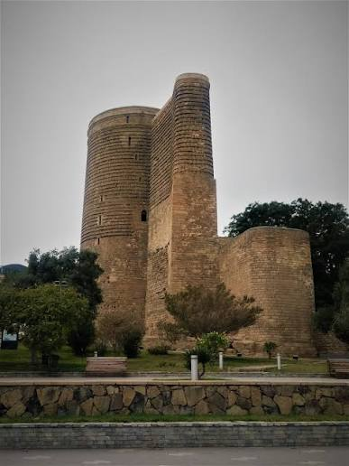
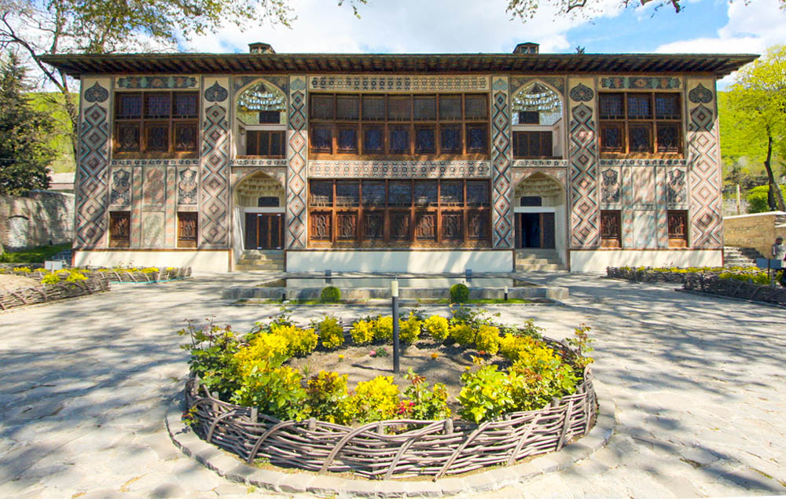
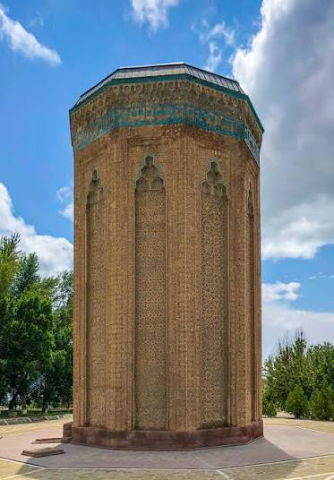
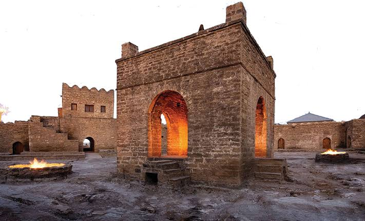
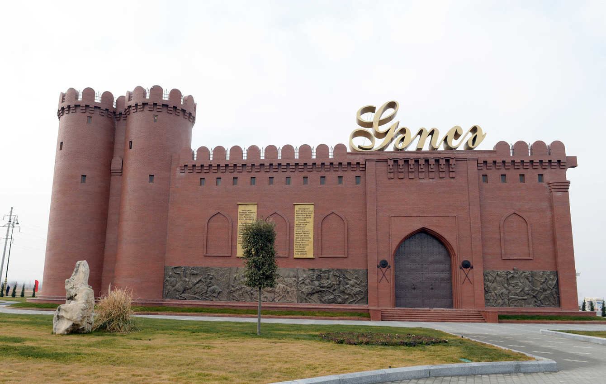

Şirvanşahlar Sarayı
Şirvanşahlar sarayı Azərbaycan memarlığının incisidir. Kompleksdə saray, məscid, türbə və hamam yerləşir.
Memarlıq İrsi
Kompleks 2000-ci ildə YUNESKO-nun Ümumdünya İrs siyahısına daxil edilib.

Qız Qalası
Qız Qalası Azərbaycanın ən tanınan simvoludur — 8 mərtəbəli, silindrik formalı, 29 metr hündürlüyündə qala. Tikilmə tarixi və məqsədi haqqında hələ də mübahisələr davam edir: bəzi tədqiqatçılar onu müdafiə istehkamı, bəziləri isə zərdüştlük məbədi hesab edir. Qalanın adı ilə bağlı bir neçə əfsanə yaşayır — ən məşhuru, atası tərəfindən zorla evləndirilmək istənən şahzadə qızın qaladan Xəzərə atılması hekayəsidir.
Memarlıq Siri
Qalanın divarlarındakı sirli çıxıntı və divar qalınlığının məqsədi bu günə qədər tam izah edilə bilməyib — bu da onu Şərqin ən müəmmalı abidələrindən birinə çevirir.

Şəki Xan Sarayı
Şəki xanlarının yay iqamətgahı kimi tikilən bu saray, bir mismar belə istifadə edilmədən yığılıb — taxta hissələr yalnız oyma və keçidlərlə bir-birinə bağlanıb. Şəbəkə pəncərələri rəngli şüşə qırıqlarından düzəldilib, günəş işığı düşəndə otaq içi min bir rəngə boyanır. Divarlardakı freskalar ov səhnələri və çiçək naxışları ilə zəngindir.
Sənətkarlıq Möcüzəsi
Bir şəbəkə pəncərəsi hazırlamaq üçün ustalar aylarla işləyirdi — bu texnika bu gün demək olar ki, unudulmaq üzrədir.

Möminə Xatun Türbəsi
Naxçıvan memarlıq məktəbinin banisi Əcəmi Əbubəkr oğlu Naxçıvaninin ən möhtəşəm əsəri. On üzlü prizma formasında olan bu türbə, səthini örtən həndəsi və epiqrafik naxışlarla Şərq memarlığının zirvəsi hesab olunur. Atabəy Şəmsəddin Eldənizin arvadı Möminə Xatunun xatirəsinə tikilib.
Naxçıvan Memarlıq Məktəbi
Əcəminin işlətdiyi həndəsi naxış üsulları sonrakı əsrlərdə bütün Yaxın Şərq memarlığına təsir göstərib.

Atəşgah Məbədi
Yerin təkindən çıxan təbii qazın əsrlər boyu sönmədən yanması bu yeri müqəddəs ziyarətgaha çevirib. Beşbucaqlı qala divarları içərisindəki mərkəzi məbəd hind tacirləri tərəfindən tikilib və zərdüştlərin, hindusların, sikhlərin ortaq ibadət yeri olub. Divarlarda sanskrit və pəncabi dillərində yazılar qalır.
Sönməyən Alov
XX əsrdə neft-qaz sənayesi inkişaf edəndə təbii qaz tükənib, indi "əbədi alov" süni qazla dəstəklənir.

Gəncə Qapıları
Gəncə şəhərinin darvazaları üçün tökülmüş bu möhtəşəm tunc qapılar orta əsr metaltökmə sənətinin nadir nümunəsidir. 1139-cu ildə güclü zəlzələdən sonra şəhər dağılanda, sonra isə 1804-cü ildə rus qoşunları Gəncəni işğal edərkən qapılar qənimət kimi aparılıb və bu gün Gürcüstandakı Gelati monastırında saxlanılır.
Qaytarılmayan İrs
Qapılar üzərindəki ərəb yazıları onların Gəncədə hazırlandığını dəqiq təsdiqləyir — bu, itirilmiş mədəni irsin ən çarpıcı nümunələrindən biridir.